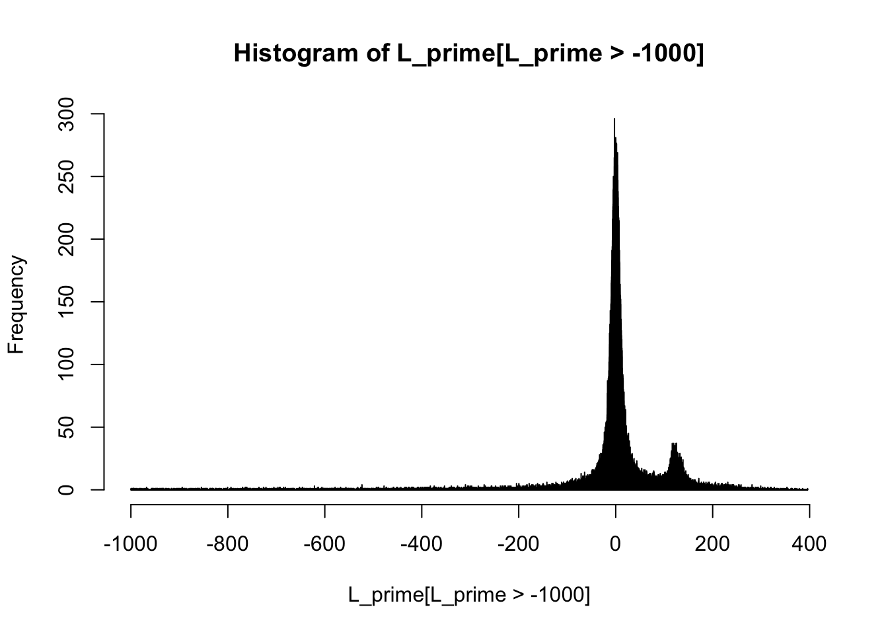
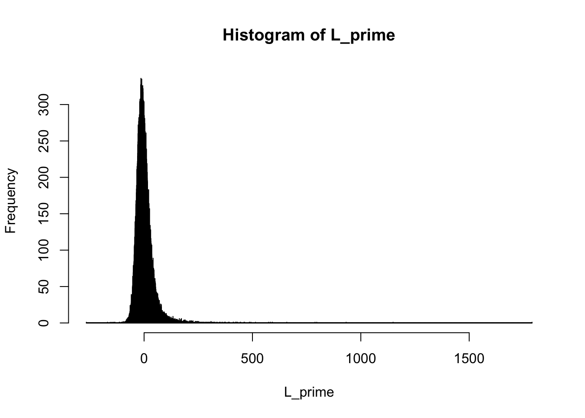
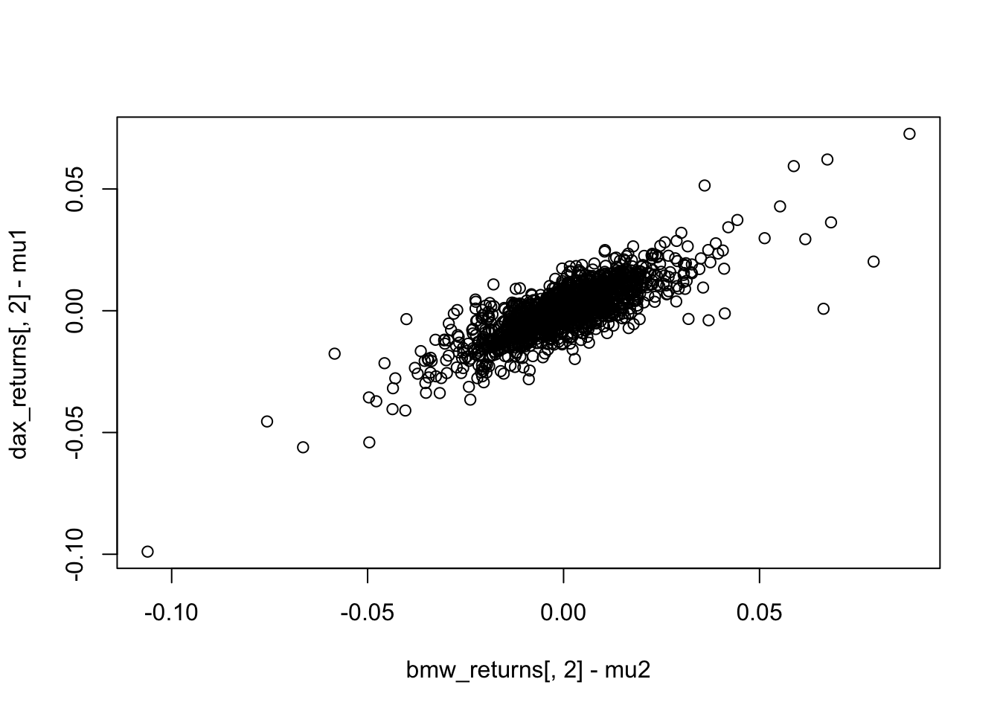
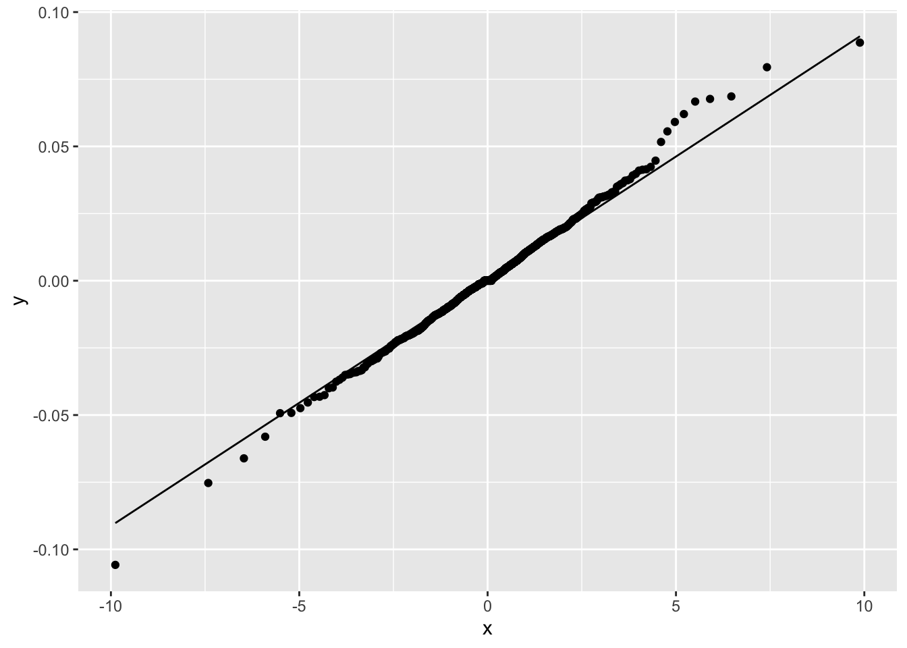
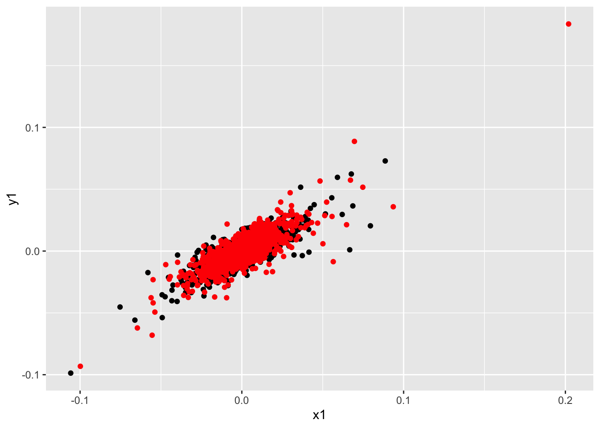

Projects in Quantitative Risk Management
Assignment 1
Assignment 2
rmarkdown::render(
'QRM/QRM-Assignment2.Rmd',
output_file = "QRM-Assignment2.pdf",
output_dir = "pdf/render"
)Problem 1
(a) Gaussian copula.
To simulate from a gaussian copula, we have followed the algorithm
found on page 74 in the HL notes. To find \(R\) we have used the \(R_{i,j}\) formula found on page 80 besides
the gaussian copula. Futhermore notice the the diagonal of \(R\). To find the cholesky decomposition we
use the build-in function chol() in R. From this algorithm
we find the estimates to be;
\[ VaR_{0.99}(L)= 206.166 ,\hspace{30pt} ES_{0.99}(L)= 244.369 \]
#We follow algorithm 10.1 to model the dependence structure of the ....
R_ij <-sin(pi*0.4/2)
S <- rep(R_ij,50*50)
R <- matrix(S, nrow = 50)
diag(R) <- sin(pi/2)
#Now we have created R in algorithm
A <- chol(R)
L <-c()
n <- 100000
for (i in 1:n) {
Z <- rnorm(50,0,1)
X <- A%*%Z
U <- pnorm(X, mean = 0, sd=1)
X_j <- 1/(100*sqrt(3))*qt(U, df=3)
L_j <- -sum(100*(exp(X_j)-1))
L <- c(L,L_j)
}
L_prime <- sort(L, decreasing = T)
bound <- ceiling(n*(1-0.99)+1)
ES_0.99 <- sum(L_prime[1:bound])/bound
VaR_0.99 <- L_prime[bound]
VaR_0.99## [1] 206.7923ES_0.99## [1] 244.2151hist(L_prime[L_prime>-1000], breaks = 10000)
#Look page 80 for R_i,j; rho_tau is given in problem-text, and diag is just 1
#since X is continous hence the probabilities are 1 and 0
#(look formula section 8.5)(b) Clayton copula
The simulation in this problem is done using the algorithm on page 79. \(\theta\) is defined for the Clayton copula on page 80:
\[ \theta=\frac{2\cdot \rho}{1-\rho}=\frac{2\cdot 0.4}{1-0.4} \]
It is then possible to simulate from the Clayton copula and estimate;
\[ VaR_{0.99}(L)= 120.930 ,\hspace{30pt} ES_{0.99}(L)= 181.634 \]
#Follow algorithm 10.4 page 79 with theta defined on page 80.
theta <- 2*0.4/(1-0.4)
#Now we have created R in algorithm
L <-c()
n <- 100000
for (i in 1:n) {
X <- rgamma(1,1/theta,1)
V <- -log(runif(50,0,1))/X
U <- (V+1)^(-1/theta)
X_j <- 1/(100*sqrt(3))*qt(U, df=3)
L_j <- -sum(100*(exp(X_j)-1))
L <- c(L,L_j)
}
L_prime <- sort(L, decreasing = T)
bound <- ceiling(n*(1-0.99)+1)
ES_0.99 <- sum(L_prime[1:bound])/bound
VaR_0.99 <- L_prime[bound]
VaR_0.99## [1] 120.4391ES_0.99## [1] 187.0663hist(L_prime, breaks = 10000)
\(VaR\) and \(ES\) are radically different for the two copulas. This could be the case, since the Clayton copula is an archemedian copula. This matters, since an elliptical copula has radial symmetry, and thus cant distinguish the dependence between high losses and high gains like the Clayton copula can. Moreover, as in general, these 2 copulas have different dependence structure, and thus will generate different sizes of returns.
Problem 2
(a) Propose an elliptical (or other) distribution which is appropriate for this data, and compute the one-day \(VaR_{0.99}\) and \(ES_{0.99}\).
As we saw in the homework 1 assigment, that the dax returns data was approximativly t-distributed with 4 degrees of freedome, we have likewise checked the bmw returns. Down below you can see the bmw returns in a qq-plot against the residuals for a t-distribution with 4 df;
library(dplyr)
dax_returns <- read.delim("data/dax_returns.txt",header = TRUE) %>% as.data.frame()
dax_returns[,2] <- dax_returns[,1]
dax_returns[,1] <- 1:dim(dax_returns)[1]
bmw_returns <- read.delim("data/bmw_returns.txt",header = TRUE) %>% as.data.frame()
bmw_returns[,2] <- bmw_returns[,1]
bmw_returns[,1] <- 1:dim(bmw_returns)[1]
mu1 <- mean(dax_returns[,2])
mu2 <- mean(bmw_returns[,2])
plot(bmw_returns[,2], dax_returns[,2])
plot(bmw_returns[,2]-mu2, dax_returns[,2]-mu1)
library(ggplot2)
ggplot(dax_returns, aes(sample = dax_returns[,2])) + stat_qq(distribution = qt, dparams = 4) +
stat_qq_line(distribution = qt, dparams = 4)
ggplot(bmw_returns, aes(sample = bmw_returns[,2])) + stat_qq(distribution = qt, dparams = 4) +
stat_qq_line(distribution = qt, dparams = 4)
Hence we are proposing the elliptical distribution to be the multivariate t-distribution with \[ \Sigma=\begin{bmatrix} \text{Var(bmw)} & \text{Cov(bmw,dax)}\\ \text{Cov(bmw,dax)} & \text{Var(dax)} \end{bmatrix}=\begin{bmatrix} 0.0001911 & 0.0001194\\ 0.0001194 & 0.0001142 \end{bmatrix}. \] by example 9.1 for the t-distribution with 4 degrees of freedom. The following is simulated vs emperical data;
mu1 <- mean(dax_returns[,2])
mu2 <- mean(bmw_returns[,2])
mu <- c(mu1,mu2)
sigma <- matrix(
c(var(dax_returns[,2]),
cov(dax_returns[,2],bmw_returns[,2]),
cov(dax_returns[,2],bmw_returns[,2]),
var(bmw_returns[,2])),
nrow = 2
)
library(mvtnorm)
n <- 1700
X <- rmvt(n,sigma=1/2*sigma, df=4) + matrix(c(rep(mu[1],n),rep(mu[2],n)),ncol = 2)
library(ggplot2)
sim_dat = data.frame(x1 = bmw_returns[,2], y1 = dax_returns[,2], x2 = X[,2], y2 = X[,1])
ggplot(sim_dat) + geom_point(aes(x = x1, y=y1)) + geom_point(aes(x = x2, y=y2), col = "red")
Simulating from this multivariate distribution we are now able to calculate the losses using the formula on page 8 in HL. Doing this we can calculate value at risk and expected shortfall as per usual and we get;
\[ VaR_{0.99}\approx6.023, \hspace{30pt} ES_{0.99}\approx8.33 \]
mu <- c(mu1,mu2)
cov(dax_returns[,2],bmw_returns[,2])## [1] 0.0001194044var(dax_returns[,2])## [1] 0.0001141866var(bmw_returns[,2])## [1] 0.0001910575sigma <- matrix(
c(cov(dax_returns[,2],bmw_returns[,2]),
var(dax_returns[,2]),
cov(dax_returns[,2],bmw_returns[,2]),
var(bmw_returns[,2])),
nrow = 2
)
S_n <- 100
dax_returns[,3] <- -S_n*(exp(dax_returns[,2]) - 1)
dax_returns[,4] <- sort(dax_returns[,3], decreasing = T)
bmw_returns[,3] <- -S_n*(exp(bmw_returns[,2]) - 1)
bmw_returns[,4] <- sort(bmw_returns[,3], decreasing = T)
L <- bmw_returns[,4]+dax_returns[,4]
bound <- (1700*(1-0.99)+1)
ES_0.99 <- sum(L[1:bound])/bound
VaR_0.99 <- L[bound](b) Now use the standard variance-covariance method to compute the one-day \(VaR_{0.99}\). How do your two estimates compare?
We want to compute the one-day \(VaR_{0.99}\) by the variance-covariance method. We do this by assuming the linearized approximation of the losses.
\[ L^{\Delta}_{n+1}=-\sum_{i=1}^{2} a_i\cdot S_n^{i}X_{n+1}^i=-w^T\cdot X_{n+1} \]
Where
\[ X_{n+1}= \begin{bmatrix} X_{n+1}^1\\ X_{n+1}^2 \end{bmatrix} \sim\mathcal{N}(m,\Sigma)\\ w= \begin{bmatrix} a_1\cdot S_n^1\\ a_2\cdot S_n^2 \end{bmatrix} = \begin{bmatrix} 100\\ 100 \end{bmatrix} \]
Because we hold one of each stock at price \(100\).\ We can then estimate \(m\) and \(\Sigma\) from our data and calculate \(VaR_{0.99}\) as the following:
\[ VaR_{0.99}=-w^T\cdot m+\sqrt{w^T\Sigma w}\cdot \Phi^{-1}(0.99) \]
We compute that \(VaR_{0.99}\) is 5.37. Which is smaller than the estimate computed in the previous problem. This might be because the estimate \(e^X\approx 1+x\) underestimates our losses. A bigger problem might be that as discussed in the previous problem the t-distribution fits best to the data. Since we assume a normal distribution in the standard variance-covariance model the quantile is too small. The normal distribution has lighter tails than the t distribution. This means the model might not catch the extreme events very well leading to a more moderate \(VaR\) estimate.
n <- 1700 # nrow(bmw_returns) = nrow(dax_returns) = 1700
w <- c(100,100)
mu1 <- 1/n * sum(bmw_returns[,2])
mu2 <- 1/n * sum(dax_returns[,2])
mu <- c(mu1,mu2)
cov(dax_returns[,2],dax_returns[,2])## [1] 0.0001141866Sigma11 <- 1/(n-1) * sum((bmw_returns[,2] - mu1) * (bmw_returns[,2] - mu1))
Sigma12 <- 1/(n-1) * sum((bmw_returns[,2] - mu1) * (dax_returns[,2] - mu2))
Sigma21 <- 1/(n-1) * sum((dax_returns[,2] - mu2) * (bmw_returns[,2] - mu1))
Sigma22 <- 1/(n-1) * sum((dax_returns[,2] - mu2) * (dax_returns[,2] - mu2))
Sigma <- matrix(data = c(Sigma11,Sigma12,Sigma21,Sigma22), nrow = 2)
VaR0.99 <- - t(w)%*%mu + sqrt( t(w)%*%Sigma%*%w )*qnorm(0.99,0,1)
VaR0.99## [,1]
## [1,] 5.368659Problem 3
(a)
By proposition 10.7 in Hult & Lindskog the coefficient of upper tail dependence is \(0\) because \((X_1,X_2)\) has normal distributed marginals.
(b)
By proposition 10.8 in Hult & Lindskog the coefficient of upper tail dependence is:
\[ \lambda_U(X_1,X_2)=2\cdot \bar{t}_{\nu+1}\left(\sqrt{\nu+1}\frac{\sqrt{1-R_{12}}}{\sqrt{1+R_{12}}}\right) \]
Assuming \(\bar{t}_{\nu+1}\) is the mean the coefficient of upper tail dependence is 0.
(c)
Firstly we compute the Frank copula. By \(C(u_1,u_2)=\phi(\phi^{-1}(u_1)+\phi^{-1}(u_2))\). We need to find the inverse of the generator:
\[ \phi(t)=-\log\left(\frac{e^{-\theta\cdot t}-1}{e^{-\theta}-1}\right)\Rightarrow\phi^{-1}(t)=-\frac{1}{\theta}\log\left(e^{-t}(e^{-\theta}-1)+1\right) \]
Then we can compute the copula:
\[ C(u_1,u_2)=\phi(\phi^{-1}(u_1)+\phi^{-1}(u_2))=-\frac{1}{\theta}\log\left(\frac{(e^{-\theta u_1}-1)(e^{-\theta u_2}-1)}{e^{-\theta}-1}+1\right) \]
We can now calculate the coefficient of upper tail dependence for this copula:
\[\begin{align*} \lambda_U(X_1,X_2)&=\lim_{u\rightarrow 1}\frac{1-2u+C(u,u)}{1-u}\\ &=\lim_{u\rightarrow 1}\frac{1-2u-\frac{1}{\theta}\log\left(\frac{(e^{-\theta u}-1)(e^{-\theta u}-1)}{e^{-\theta}-1}+1\right)}{1-u}\\ &=\lim_{u\rightarrow 1}2+\frac{1}{\theta}\left(\frac{(e^{-\theta u}-1)(e^{-\theta u}-1)}{e^{-\theta}-1}+1\right)^{-1}\frac{1}{e^{-\theta}-1}\left(2(e^{-\theta u}-1)(-\theta e^{-\theta u})\right)\\ &=2+\frac{1}{\theta}\left(\frac{(e^{-\theta}-1)(e^{-\theta}-1)}{e^{-\theta}-1}+1\right)^{-1}\frac{1}{e^{-\theta}-1}\left(2(e^{-\theta}-1)(-\theta e^{-\theta})\right)\\ &=2-2=0 \end{align*}\]
The coefficient of upper tail dependence for the Frank copula is \(0\).
Problem 4
(a)
We want to compute the coefficient of upper tail dependence for the Morgenstern copula. We use the same method as before:
\[\begin{align*} \lambda_U(X_1,X_2)&=\lim_{u\rightarrow1}\frac{1-2u+u^2\left(1+\delta(1-u)(1-u))\right)}{1-u}\\ &=\lim_{u\rightarrow1}-2+2u\left(1+\delta(1-u)(1-u))\right)+u^2\left(\delta2(1-u)(-1))\right)\\ &=2-2=0 \end{align*}\]
The coefficient of upper tail dependence for the Morgenstern copula is \(0\).
(b)
To show the \(\tilde{C}\) is on the form of (1) we remember that there exists an independent copula (\(C_{12}\)), and thus we see;
\[ \tilde{C}(u_1,u_2,u_3)=\max[u_1u_2+u_3-1,0]=C_m(C_{12}(u_1,u_2),u_3), \]
where \(C_m(u_1,u_2)=\max[u_1+u_2-1,0]\), which is a copula from the calculations done in example 10.5 in HL. Futhermore we can evaluate the following limit;
\[ \lim_{t\to\infty}\tilde{C}(u_1^{1/t},u_2^{1/t},u_3^{1/t})^t=\lim_{t\to\infty}\max[u_1^{1/t}u_2^{1/t}+u_3^{1/t}-1,0]^t \]
One can here make the argument that as t grows, \(u_i^{1/t}\to1\). Therefore we are only required to evaluate the first part of the max-function; \[ \lim_{t\to\infty}\max[u_1^{1/t}u_2^{1/t}+u_3^{1/t}-1,0]^t=\lim_{t\to\infty}[(u_1u_2)^{1/t}+u_3^{1/t}-1]^t= \exp\left(\lim_{t\to\infty}t\cdot\log[(u_1u_2)^{1/t}+u_3^{1/t}-1]\right) \] From here we substitute the limit variable \(t=\frac{1}{x}\), and let x go to 0 since \(\frac{1}{0}=\infty\) in the limit;
\[ \exp\left(\lim_{t\to\infty}t\cdot\log[(u_1u_2)^{1/t}+u_3^{1/t}-1]\right)=\exp\left(\lim_{x\to0}\frac{\log[(u_1u_2)^{x}+u_3^{x}-1]}{x}\right) \] This is a \(\frac{0}{0}\)-expression, thus we are using L’Hopital;
\[ \exp\left(\lim_{x\to0}\frac{(u_1u_2)^x\log(u_1u_2) + u_3^x\log(u_3))}{(u_1u_2)^x + u_3^x-1}\right)=\exp\left(\frac{\log(u_1u_2) + \log(u_3))}{1}\right)=\exp{\log(u_1u_2u_3)}=u_1u_2u_3. \]
Finally, one can see that \(\tilde{C}\) is not a copula, since we can choose points \(b=(b_1,b_2,b_3)=(1,1,1)\) and \(a=(a_1,a_2,a_3)=(0.4,0.4,0.4)\) and see that the 3 dimensional version of condition (B3) in HL def 10.1 yields;
\[\begin{align*} \tilde{C}(a_1,a_2,b_3)-\tilde{C}(a_1,a_2,a_3)+\tilde{C}(a_1,b_2,a_3)+\tilde{C}(b_1,a_2,a_3)\\ +\tilde{C}(b_1,b_2,b_3) -\tilde{C}(b_1,b_2,a_3)-\tilde{C}(b_1,a_2,b_3)-\tilde{C}(a_1,b_2,b_3)\\=0.4^2-0+0+0+1-0.4-0.4-0.4<0 \end{align*}\]
Hence since we have found points in the 3-dim space a and b, where \(a_i<b_i\) and the combinations are not greater than or equal to 0, \(\tilde{C}\) can not be a copula.
(c)
What we first want to do, is to create a copula, where each of the marginals of this copula will be another 2-dimensional copula, only using the copulas given in the homework paper (\(C_{12},C_{13}\hspace{5pt}\text{and}\hspace{5pt} C_{23}\)). One can easily see that if i suggest the copula \(C(u_1,u_2,u_3)=u_1u_2u_3[1+\delta(1-u_2)(1-u_3)]\) this will have the right marginals since;
\[\begin{align*} \frac{dC}{du_1}=u_2u_3[1+\delta(1-u_2)(1-u_3)]=C_{23}(u_2,u_3)\\ \frac{dC}{du_2}=u_1u_3[1+\delta(1-1)(1-u_3)]=u_1u_3=C_{13}(u_1,u_3)\\ \frac{dC}{du_3}=u_1u_2[1+\delta(1-u_2)(1-1)]=u_1u_2=C_{12}(u_1,u_2) \end{align*}\]
And since all the 2-dim marginals are copulas, C must be a copula itself. Futhermore, we can find the C from above by using nested copulas. For instance ponder on \(C(u_1,u_2,u_3)=C_{12}(u_1,C_{23}(u_2,u_3))\). Otherwise we can also create new copulas, with 2-dim marginals using nested copulas such as \(C(u_1,u_2,u_3)=C_{12}(u_1,C_{13}(u_2,u_3))=u_1u_2u_3\) giving us;
\[ \frac{dC}{du_1}=u_2u_3=C_{13}(u_2,u_3)\\ \frac{dC}{du_2}=u_1u_3=C_{13}(u_1,u_3)\\ \frac{dC}{du_3}=u_1u_2=C_{13}(u_1,u_2). \]
(d)
We calculate:
\[\begin{align*} C_{0,23}(u_1,u_2)&=\lim_{t\rightarrow\infty}C_{23}^t(u_1^{1/t},u_2^{1/t})\\ &=\lim_{t\rightarrow\infty}\left(u_1^{1/t}u_2^{1/t}(1+\delta(1-u_1^{1/t})(1-u_2^{1/t}))\right)^t\\ &=u_1u_2\lim_{t\rightarrow\infty}\left(1+\delta(1-u_1^{1/t})(1-u_2^{1/t})\right)^t\\ &=u_1u_2\lim_{t\rightarrow\infty}exp\left(t\cdot \log\left(1+\delta(1-u_1^{1/t})(1-u_2^{1/t})\right)\right)\\ &=u_1u_2\cdot \exp\left(\lim_{x\rightarrow0}\frac{\log\left(1+\delta(1-u_1^{x})(1-u_2^{x})\right)}{x}\right)\\ &=u_1u_2\cdot \exp\left(\lim_{x\rightarrow0}\delta\frac{u_1^x\log(u_1)(u_2^x-1)+u_2^x\log(u_2)(u_1^x-1)}{1+\delta(1-u_1^{x})(1-u_2^{x})}\right)\\ &=u_1u_2\cdot e^{0}=u_1u_2 \end{align*}\]
Next we first observe that \(C_{12}(u_1,C_{0,23}(u_2,u_3))=u_1u_2u_3\). Now we compute:
\[\begin{align*} \lim_{t\rightarrow\infty}C^t(u_1^{1/t},u_2^{1/t},u_3^{1/t})&=\lim_{t\rightarrow\infty}\left(u_1^{1/t}u_2^{1/t}u_3^{1/t}(1+\delta(1-u_2^{1/t})(1-u_3^{1/t}))\right)^t\\ &=u_1u_2u_3\lim_{t\rightarrow\infty}\left(1+\delta(1-u_2^{1/t})(1-u_3^{1/t})\right)^t\\ &=u_1u_2u_3 \end{align*}\]
By the previous calculations. Which is exactly what we wanted.
(e)
First note that from definition of VaR;
\[ F(VaR_{1-n^{-1}}(X_1))=1-n^{-1}\Rightarrow a_n=VaR_{1-n^{-1}}=F^{-1}(1-n^{-1}) \]
Furthermore we can calculate \(F^{-1}\);
\[ x=F(F^{-1}(x))=1-F^{-1}(x)^{-\alpha}\Rightarrow F^{-1}(x)=(1-x)^{-1/\alpha} \]
Now we can go back and look at \(a_n\);
\[ a_n=F^{-1}(1-n^{-1})=(1-1-n^{-1})^{-1/\alpha}=n^{1/\alpha} \]
Now we can evaluate the limit;
\[ \Phi_\alpha(x):=\lim_{n\to\infty} F^n(a_nx)=\lim_{n\to\infty} \left(1-(x\cdot n^{1/\alpha})^{-\alpha}\right)^n=\lim_{n\to\infty}\left( 1-\frac{x^{-\alpha}}{n}\right)^n=e^{-x^{-\alpha}} \]
Now, saying the vector \((X_1,X_2)\sim G\) with copula \(C_{23}\), and \(X_1,X_2\sim F\) we can use Sklars theorem;
\[ \lim_{n\to\infty}G(a_nx,a_ny)^n=\lim_{n\to\infty}C_{23}(F(a_nx),F(a_ny))^n=\lim_{n\to\infty}\Big(1-\frac{x^{-\alpha}}{n}\Big)^n\Big(1-\frac{y^{-\alpha}}{n}\Big)^n\left[1+\delta(1-1+\frac{x^{-\alpha}}{n})(1-1+\frac{y^{-\alpha}}{n})\right]^n \]
Now note that;
\[ \lim_{n\to\infty}\left[1+\delta\Big(\frac{x^{-\alpha}}{n}\Big)\Big(\frac{y^{-\alpha}}{n}\Big)\right]^n=\exp\Big( \lim_{n\to\infty} n \cdot \log\left(1+\delta\Big(\frac{x^{-\alpha}}{n}\Big)\Big(\frac{y^{-\alpha}}{n}\Big)\right) \Big) \]
From here we substitute the limit variable \(n=\frac{1}{t}\), and let t go to 0 since \(\frac{1}{0}=\infty\) in the limit;
\[ \exp\left( \lim_{t\to0} \frac{\log\left(1+\delta\Big(x^{-\alpha}\cdot t\Big)\Big(y^{-\alpha}\cdot t\Big)\right)}{t} \right) \]
This is a \(\frac{0}{0}\)-expression in the exponent, thus we use L’Hopital;
\[ \exp\left( \lim_{t\to0} \frac{2\delta x^{-\alpha}y^{-\alpha}\cdot t}{\delta x^{-\alpha}y^{-\alpha}\cdot t^2+1} \right)=\exp(0/1)=1 \]
And thus we can conclude that;
\[ \lim_{n\to\infty}G(a_nx,a_ny)^n=\lim_{n\to\infty}\Big(1-\frac{x^{-\alpha}}{n}\Big)^n\Big(1-\frac{y^{-\alpha}}{n}\Big)^n\left[1+\delta(1-1+\frac{x^{-\alpha}}{n})(1-1+\frac{y^{-\alpha}}{n})\right]^n=\Phi_\alpha(x)\Phi_\alpha(y)\cdot 1 \]
Problem 5
(i) Calculating the decay of \(\mathbf{P}\left\{L_n>na\right\}\) in \(n\)
It is assumed that \(\{X_i\}\) is an i.i.d. sequence of Bernoulli variables with probability \(p\), \(\{Z_i\}\) is an i.i.d. sequence of \(\text{Exp}(\theta)\) variables and furthermore that these sequences is independent of each other. Then considering the variable \(X_iZ_i\) we see that for some \(u> 0\)
\[ \mathbf{P}\left\{X_iZ_i\le u\right\}=1-\mathbf{P}\left\{X_iZ_i> u\right\}=1-\mathbf{P}\left\{Z_i> u,X_i =1\right\}. \]
Since \(X_i\in\{0,1\}\). By assumption \(X_i\) and \(Z_i\) is independent hence
\[ \mathbf{P}\left\{X_iZ_i\le u\right\} = 1- \mathbf{P}\left\{Z_i> u\right\}\mathbf{P}\left\{X_i=1\right\}=1-p\exp\{-\theta u\}. \] The event \(\{X_iZ_i=0\}\) happens with probability \(1-p\) since it is equivalent with \(X_i=0\) (where \(\{Z_i=0\}\) is \(\mathbf{P}\)-neglebel). Then it follows that
\[ dF(t)=(1-p)1_{\{u=0\}}+\theta p\exp\{-\theta u\}dt. \]
Given the interest in the CG-function for \(X_iZ_i\) we see now that
\[ \Lambda(\xi)=\log \kappa(\xi)=\log \mathbb{E}\left[e^{(X_iZ_i)\xi}\right]=\log \int e^{u\xi}d F \]
Hence calculating the integral yield the recipy for determining the function \(\Lambda^*\). We have that
\[ \int e^{u\xi}dF=(1-p)e^{0}+\int_0^\infty e^{u\xi}p\theta e^{-\theta u}\ du=1-p+p\theta\int_0^\infty e^{( \xi -\theta ) u}\ du=1-p-\frac{p\theta}{\xi -\theta }\left[1-\lim_{u\to \infty}e^{(\xi -\theta)u}\right]. \]
Then for \(\xi<\theta\) it follows that
\[ \kappa(\xi) = 1-p+\frac{p\theta}{\theta-\xi} \to\infty \Longrightarrow \Lambda(\xi)=\log\left(1-p+\frac{p\theta}{\theta-\xi}\right)\to\infty,\ \xi\to\theta_-. \]
In other words \(\Lambda^*\) is determined given the solution for each \(a\) to the equation.
\[ \frac{\partial}{\partial \xi}\left\{\xi a-\Lambda(\xi)\right\}=0. \]
Solving for \(\xi\) gives the equation.
\[\begin{align*} 0&=\frac{\partial}{\partial \xi}\left\{\xi a-\Lambda(\xi)\right\}=a-\Lambda'(\xi)=a-\frac{1}{1-p+\frac{p\theta}{\theta-\xi}}\frac{-p\theta}{(\theta-\xi)^2}(-1)=a-\frac{p\theta}{\left(1-p+\frac{p\theta}{\theta-\xi}\right)(\theta-\xi)^2}\\ &=a-\frac{p\theta}{\left(\theta-\xi-p\theta+p\xi+p\theta\right)(\theta-\xi)}=a-\frac{p\theta}{\left(\theta-\xi+p\xi\right)(\theta-\xi)}=a-\frac{p\theta}{\left(\theta+(p-1)\xi\right)(\theta-\xi)} \end{align*}\]
Which may be simplified as
\[ a=\frac{p\theta}{\left(\theta-(1-p)\xi\right)(\theta-\xi)}. \]
Multiplying both sides with the denominator \(\left(\theta-(1-p)\xi\right)(\theta-\xi)\) gives the second order equation
\[ p\theta=a\left(\theta-(1-p)\xi\right)(\theta-\xi)=(a\theta-a\xi)\left(\theta-(1-p)\xi\right)=a\theta^2-a\theta\xi-a\theta(1-p)\xi+a(1-p)\xi^2 \] Simplifying gives
\[ a(1-p)\xi^2-a\theta(2-p)\xi+(a\theta-p)\theta=0 \]
This equation is then solved by the two possible solutions
\[\begin{align*} \xi&=\frac{a\theta(2-p)}{2a(1-p)}\pm\frac{1}{2a(1-p)}\sqrt{a^2\theta^2(2-p)^2-4a(1-p)(a\theta-p)\theta}\\ &=\frac{\theta}{2}\frac{2-p}{1-p}\pm\frac{1}{2a(1-p)}\sqrt{a^2\theta^2(p^2+4-4p)-4a\theta(a\theta-p-a\theta p+p^2)}\\ &=\frac{\theta}{2}\frac{2-p}{1-p}\pm\frac{\sqrt{a\theta}}{2a(1-p)}\sqrt{a\theta(p^2+4-4p)-4(a\theta-p-a\theta p+p^2)}\\ &=\frac{\theta}{2}\frac{2-p}{1-p}\pm\frac{\sqrt{a\theta}}{2a(1-p)}\sqrt{a\theta p^2+4a\theta-4a\theta p-4a\theta+4p+4a\theta p-4p^2}\\ &=\frac{\theta}{2}\frac{2-p}{1-p}\pm\frac{\sqrt{a\theta}}{2a(1-p)}\sqrt{a\theta p^2+4p -4p^2}\\ &=\frac{\theta}{2}\frac{2-p}{1-p}\pm\frac{\sqrt{a\theta p}}{2a(1-p)}\sqrt{4+(a\theta-4)p}\\ &=\frac{\theta}{2}\frac{2-p}{1-p}\pm\frac{\sqrt{\theta p}}{2\sqrt{a}(1-p)}\sqrt{4+(a\theta-4)p} \end{align*}\]
That is the possible solutions is
\[ \xi_-=\frac{\theta}{2}\frac{2-p}{1-p}-\frac{1}{1-p}\frac{\sqrt{\theta p}}{2\sqrt{a}}\sqrt{4+(a\theta-4)p},\hspace{20pt}\xi_+=\frac{\theta}{2}\frac{2-p}{1-p}+\frac{1}{1-p}\frac{\sqrt{\theta p}}{2\sqrt{a}}\sqrt{4+(a\theta-4)p} \]
We argue now that the positive \(\xi_+\) yields an number greater than \(\theta\) hence not valid. That is
\[ \theta<\xi_+ =\frac{\theta}{2}\frac{2-p}{1-p}+\frac{1}{1-p}\frac{\sqrt{\theta p}}{2\sqrt{a}}\sqrt{4+(a\theta-4)p} \]
This is equivalent with
\[ 0<\frac{\theta}{2}\frac{2-p}{1-p}-\theta+\frac{1}{1-p}\frac{\sqrt{\theta p}}{2\sqrt{a}}\sqrt{4+(a\theta-4)p} \]
Dividing by \(\theta>0\)
\[ 0<\frac{1}{2}\frac{2-p}{1-p}-1+\frac{1}{1-p}\frac{\sqrt{ p}}{2\sqrt{a\theta}}\sqrt{4+(a\theta-4)p} \]
However since \(\frac{1}{1-p}\frac{\sqrt{ p}}{2\sqrt{a\theta}}\sqrt{4+(a\theta-4)p}\) is a factor of positive number the product itself is positive hence
\[ \frac{1}{2}\frac{2-p}{1-p}-1+\frac{1}{1-p}\frac{\sqrt{ p}}{2\sqrt{a\theta}}\sqrt{4+(a\theta-4)p}>\frac{1}{2}\frac{2-p}{1-p}-1 \]
Evaluation the right yields
\[ \frac{1}{2}\frac{2-p}{1-p}-1=\frac{2-p}{2}\frac{1}{1-p}-1=\frac{1-\frac{p}{2}}{1-p}-1>0 \]
Since \(1-p/2>1-p\). Then combining we have
\[ \frac{1}{2}\frac{2-p}{1-p}-1+\frac{1}{1-p}\frac{\sqrt{ p}}{2\sqrt{a\theta}}\sqrt{4+(a\theta-4)p}>\frac{1-\frac{p}{2}}{1-p}-1>0 \]
giving that
\[ \theta<\frac{\theta}{2}\frac{2-p}{1-p}+\frac{1}{1-p}\frac{\sqrt{\theta p}}{2\sqrt{a}}\sqrt{4+(a\theta-4)p}=\xi_+ \]
and the solution is
\[ \xi_{sup}(a)\stackrel{\text{def}}{=}\theta\frac{1-\frac{p}{2}}{1-p}-\frac{1}{1-p}\frac{\sqrt{\theta p}}{2\sqrt{a}}\sqrt{4+(a\theta-4)p}. \]
The function \(\Lambda^*(a)\) is then
\[ \Lambda^*(a)=\sup_{\xi\in \mathbb{R}}\left\{\xi a-\Lambda(\xi)\right\}=\sup_{\xi<\theta}\left\{\xi a-\Lambda(\xi)\right\}= a\xi_{sup}(a)-\Lambda(\xi_{sup}(a)). \]
Inserting \(\xi_{sup}(a)\) from above.
\[ \Lambda^*(a)=a\theta\frac{1-\frac{p}{2}}{1-p}-\frac{1}{1-p}\frac{\sqrt{\theta a p}}{2}\sqrt{4+(a\theta-4)p}-\log\left(1-p+\frac{p\theta}{\theta-\theta\frac{1-\frac{p}{2}}{1-p}-\frac{1}{1-p}\frac{\sqrt{\theta p}}{2\sqrt{a}}\sqrt{4+(a\theta-4)p}}\right) \]
That is
\[ \Lambda^*(a)=a\theta\frac{1-\frac{p}{2}}{1-p}-\frac{1}{1-p}\frac{\sqrt{\theta a p}}{2}\sqrt{4+(a\theta-4)p}-\log\left(1-p+\frac{p}{1-\frac{1-\frac{p}{2}}{1-p}-\frac{1}{1-p}\frac{\sqrt{ p}}{2\sqrt{a\theta}}\sqrt{4+(a\theta-4)p}}\right). \]
(ii) Writing an approximation of \(VaR_\alpha\)
We want to give an estimate of the \(VaR_\alpha\) for the whole portfolio giving the decay \(\mathbf{P}\left\{L_n>na\right\}\approx e^{-n\Lambda^*(a)}\) for \(n\to\infty\). That is we say that some amount of capital pr. loan \(a\) is required such that with \(1-\alpha\) probability ruin does not occur. We then model the value at risk as such
\[ \mathbf{P}\left\{L_n>VaR_\alpha\right\}=\mathbf{P}\left\{L_n>n\frac{1}{n}VaR_\alpha\right\}=\mathbf{P}\left\{L_n>na\right\} \]
i.e. \(VaR_\alpha=an\) and \(a=\frac{1}{n}VaR_\alpha\). Our objektive is then to find a suitable solution to the equation:
\[ \alpha =\mathbf{P}\left\{L_n\leq na\right\}\approx 1-e^{-n\Lambda^*(a)},\hspace{20pt} \Lambda^*(a)=\xi_{sup}(a)\cdot a-\Lambda(\xi_{sup}(a)), \]
which in turn will give an estimate of \(VaR_\alpha\). We recall that
\[ \Lambda(\xi_{sup}(a))=\log\left(1-p+p\frac{\theta}{\theta-\xi_{sup}(a)}\right) \]
with \(\xi_{sup}(a)\) as in the previous exercise. From this it follows that
\[ \frac{1}{n}\log(\alpha)= -\Lambda^*(a)=\log\left(1-p+p\frac{\theta}{\theta-\xi_{sup}(a)}\right)-\xi_{sup}(a)\cdot a \]
Giving that the inverse \((\Lambda^{*})^{-1}(\lambda)\) exist such that \(((\Lambda^{*})^{-1}\circ \Lambda^{*})(a)=a\) we could conclude
\[ VaR_\alpha =na=n(\Lambda^{*})^{-1}\left(-\frac{1}{n}\log(\alpha)\right). \]
However since \(\Lambda^*\) is convex and continuous it is does not have an inverse. This expression is however numerical solvable for small \(\alpha>0\).
We see that the derivative is given by
\[ \frac{\partial}{\partial a}\Lambda^*(a)=a-\frac{p\theta}{(\theta-\xi_{sup}(a))((1-p)(\theta-\xi_{sup}(a))+p\theta)}\xi'_{sup}(a) \]
where
\[ \xi'_{sup}(a)=\left\{\frac{p\theta(4+(a\theta -4)p)}{a^2}-\frac{p^2\theta^2}{a}\right\}\frac{1}{4(1-p)\sqrt{\frac{p\theta(4+(a\theta-4)p)}{a}}} \]
Using a first order Taylor approximation arround \(a=\theta\) yields
\[ \Lambda^*(a)=\Lambda^*(\theta)+\Lambda'^*(\theta)(a-\theta)+o(a^2) \]
which gives an approximation to the inverse function of \(\Lambda^*\) that gives an analytical solution to the \(VaR_\alpha\) since
\[ (\Lambda^{*})^{-1}(l)=\frac{1}{\Lambda'^*(\theta)}\left(l-\Lambda^*(\theta)\right)-\theta \]
hence we may make the approximation
\[ VaR_\alpha \approx n(\Lambda^{*})^{-1}\left(-\frac{1}{n}\log(\alpha)\right)\approx \frac{n}{\Lambda'^*(\theta)}\left(-\frac{1}{n}\log(\alpha)-\Lambda^*(\theta)\right)-n\theta \]
That is in detail
\[ VaR_{\alpha}(\alpha,\theta,p)=n\left\{\frac{-\frac{1}{n}\log(\alpha)-\theta \xi_{sup}(\theta)+\log\left(1-p+\frac{p\theta}{\theta-\xi_{sup}(\theta)}\right)}{\theta-\frac{p\theta}{(\theta-\xi_{sup}(\theta))((1-p)(\theta-\xi_{sup}(\theta))+p\theta)}\xi'_{sup}(\theta)}-\theta\right\}, \]
with \(\xi_{sup}(a)\) and \(\xi'_{sup}(a)\) as above.